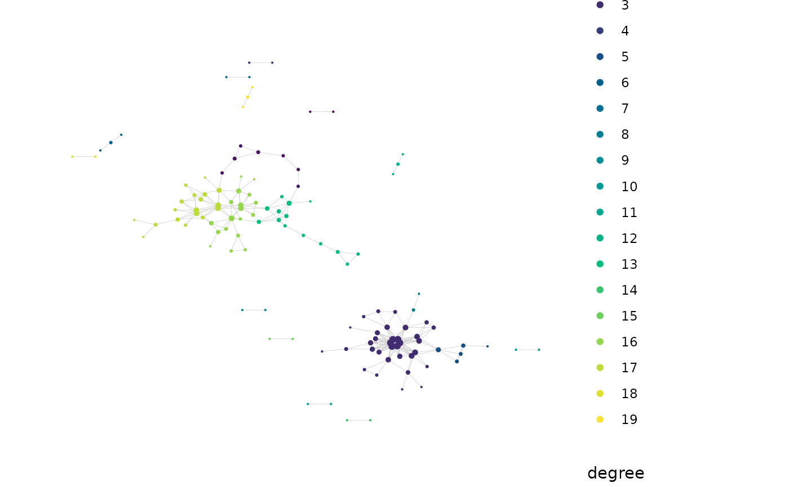
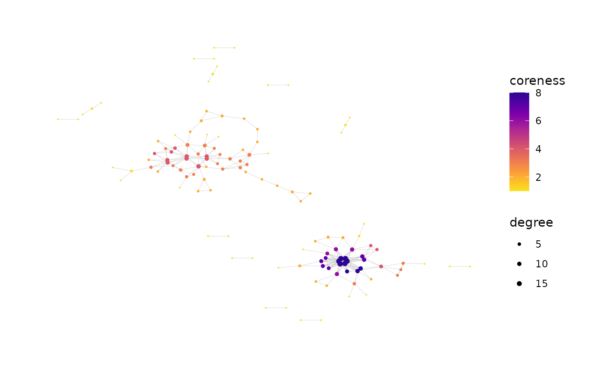
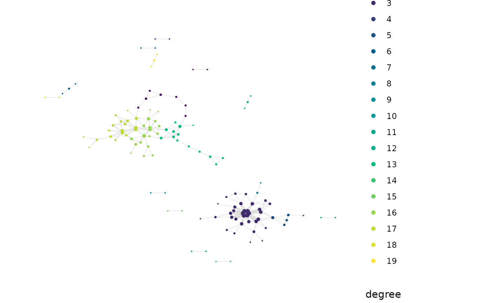
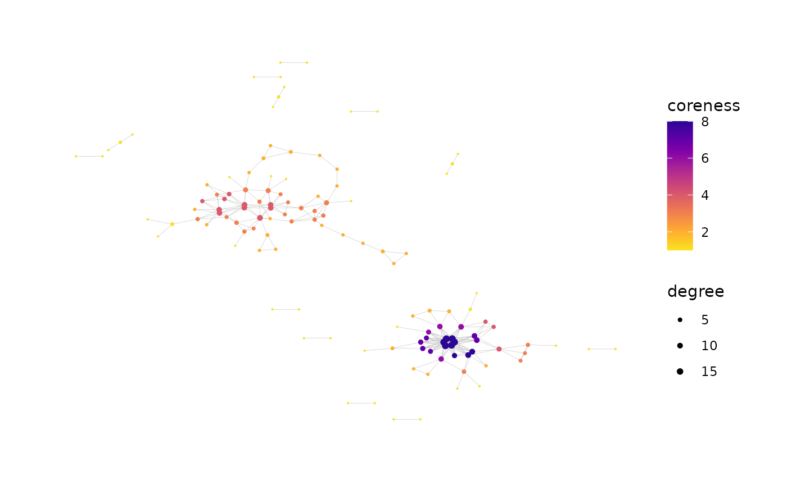

Network Analysis of Immune Repertoire
buildRepSeqNetwork.RdGiven Adaptive Immune Receptor Repertoire Sequencing (AIRR-Seq) data, builds the network graph for the immune repertoire based on sequence similarity, computes specified network properties and generates customized visualizations.
buildNet() is identical to buildRepSeqNetwork(), existing as
an alias for convenience.
Usage
buildRepSeqNetwork(
## Input ##
data,
seq_col,
count_col = NULL,
subset_cols = NULL,
min_seq_length = 3,
drop_matches = NULL,
## Network ##
dist_type = "hamming",
dist_cutoff = 1,
drop_isolated_nodes = TRUE,
net_build_method = "default",
node_stats = FALSE,
stats_to_include = chooseNodeStats(),
cluster_stats = FALSE,
cluster_fun = "fast_greedy",
cluster_id_name = "cluster_id",
## Visualization ##
plots = TRUE,
print_plots = FALSE,
plot_title = "auto",
plot_subtitle = "auto",
color_nodes_by = "auto",
...,
## Output ##
output_dir = NULL,
output_type = "rds",
output_name = "MyRepSeqNetwork",
pdf_width = 12,
pdf_height = 10,
verbose = FALSE
)
# Alias for buildRepSeqNetwork()
buildNet(
data,
seq_col,
count_col = NULL,
subset_cols = NULL,
min_seq_length = 3,
drop_matches = NULL,
dist_type = "hamming",
dist_cutoff = 1,
drop_isolated_nodes = TRUE,
net_build_method = "default",
node_stats = FALSE,
stats_to_include = chooseNodeStats(),
cluster_stats = FALSE,
cluster_fun = "fast_greedy",
cluster_id_name = "cluster_id",
plots = TRUE,
print_plots = FALSE,
plot_title = "auto",
plot_subtitle = "auto",
color_nodes_by = "auto",
...,
output_dir = NULL,
output_type = "rds",
output_name = "MyRepSeqNetwork",
pdf_width = 12,
pdf_height = 10,
verbose = FALSE
)Arguments
- data
A data frame containing the AIRR-Seq data, with variables indexed by column and observations (e.g., clones or cells) indexed by row.
- seq_col
Specifies the column(s) of
datacontaining the receptor sequences to be used as the basis of similarity between rows. Accepts a character string containing the column name or a numeric scalar containing the column index. Also accepts a vector of length 2 specifying distinct sequence columns (e.g., alpha chain and beta chain), in which case similarity between rows depends on similarity in both sequence columns (see details).- count_col
Optional. Specifies the column of
datacontaining a measure of abundance, e.g., clone count or unique molecular identifier (UMI) count. Accepts either the column name or column index. If provided, data rows withNAcount values will be removed prior to network building. Count values are used to compute certain cluster properties whencluster_stats = TRUE; seeaddClusterStats()for details.- subset_cols
Specifies which columns of the AIRR-Seq data are included in the output. Accepts a vector of column names or a vector of column indices. The default
NULLincludes all columns. The receptor sequence column is always included regardless of this argument's value. Passed tofilterInputData().- min_seq_length
A numeric scalar, or
NULL. Observations whose receptor sequences have fewer thanmin_seq_lengthcharacters are removed prior to network analysis.- drop_matches
Optional. Passed to
filterInputData(). Accepts a character string containing a regular expression (seeregex). Checks receptor sequences for a pattern match usinggrep(). Those returning a match are removed prior to network analysis.- dist_type
Specifies the function used to quantify the similarity between sequences. The similarity between two sequences determines the pairwise distance between their respective nodes in the network graph, with greater similarity corresponding to shorter distance. Valid options are
"hamming"(the default), which useshamDistBounded(), and"levenshtein", which useslevDistBounded().- dist_cutoff
A nonnegative scalar. Specifies the maximum pairwise distance (based on
dist_type) for an edge connection to exist between two nodes. Pairs of nodes whose distance is less than or equal to this value will be joined by an edge connection in the network graph. Controls the stringency of the network construction and affects the number and density of edges in the network. A lower cutoff value requires greater similarity between sequences in order for their respective nodes to be joined by an edge connection. A value of0requires two sequences to be identical in order for their nodes to be joined by an edge.- drop_isolated_nodes
A logical scalar. When
TRUE, removes each node that is not joined by an edge connection to any other node in the network graph.- net_build_method
Passed to the
methodargument ofgenerateAdjacencyMatrix(). Specifies the algorithm used to compute the network adjacency matrix.- node_stats
A logical scalar. Specifies whether node-level network properties are computed.
- stats_to_include
A named logical vector returned by
chooseNodeStats()orexclusiveNodeStats(). Specifies the node-level network properties to compute. Also accepts the value"all". Only relevant ifnode_stats = TRUE.- cluster_stats
A logical scalar. Specifies whether to compute cluster-level network properties.
- cluster_fun
Passed to
addClusterMembership(). Specifies the clustering algorithm used when cluster analysis is performed. Cluster analysis is performed whencluster_stats = TRUEor whennode_stats = TRUEwith thecluster_idproperty enabled via thestats_to_includeargument.- cluster_id_name
Passed to
addClusterMembership(). Specifies the name of the cluster membership variable added to the node metadata when cluster analysis is performed (seecluster_fun).- plots
A logical scalar. Specifies whether to generate plots of the network graph.
- print_plots
A logical scalar. If
plots = TRUE, specifies whether the plots should be printed to the R plotting window.- plot_title
A character string or
NULL. Ifplots = TRUE, this is the title used for each plot. The default value"auto"generates the title based on the value of theoutput_nameargument.- plot_subtitle
A character string or
NULL. Ifplots = TRUE, this is the subtitle used for each plot. The default value"auto"generates a subtitle based on the values of thedist_typeanddist_cutoffarguments.- color_nodes_by
Optional. Specifies a variable to be used as metadata for coloring the nodes in the network graph plot. Accepts a character string. This can be a column name of
dataor (ifnode_stats = TRUE) the name of a computed node-level network property (based onstats_to_include). Also accepts a character vector specifying multiple variables, in which case one plot will be generated for each variable. The default value"auto"attempts to use one of several potential variables to color the nodes, depending on what is available. A value ofNULLleaves the nodes uncolored.- ...
Other named arguments to
addPlots().- output_dir
A file path specifying the directory for saving the output. The directory will be created if it does not exist. If
NULL, output will be returned but not saved.- output_type
A character string specifying the file format to use when saving the output. The default value
"individual"saves each element of the returned list as an individual uncompressed file, with data frames saved in csv format. For better compression, the values"rda"and"rds"save the returned list as a single file using the rda and rds format, respectively (in the former case, the list will be namednetwithin the rda file). Regardless of the argument value, any plots generated will saved to a pdf file containing one plot per page.- output_name
A character string. All files saved will have file names beginning with this value.
- pdf_width
Sets the width of each plot when writing to pdf. Passed to
saveNetwork().- pdf_height
Sets the height of each plot when writing to pdf. Passed to
saveNetwork().- verbose
Logical. If
TRUE, generates messages about the tasks performed and their progress, as well as relevant properties of intermediate outputs. Messages are sent tostderr().
Details
To construct the immune repertoire network, each TCR/BCR clone (bulk data) or cell (single-cell data) is modeled as a node in the network graph, corresponding to a single row of the AIRR-Seq data. For each node, the corresponding receptor sequence is considered. Both nucleotide and amino acid sequences are supported for this purpose. The receptor sequence is used as the basis of similarity and distance between nodes in the network.
Similarity between sequences is measured using either the Hamming distance or Levenshtein (edit) distance. The similarity determines the pairwise distance between nodes in the network graph. The more similar two sequences are, the shorter the distance between their respective nodes. Two nodes in the graph are joined by an edge if the distance between them is sufficiently small, i.e., if their receptor sequences are sufficiently similar.
For single-cell data, edge connections between nodes can be based on similarity
in both the alpha chain and beta chain sequences.
This is done by providing a vector of length 2 to seq_cols
specifying the two sequence columns in data.
The distance between two nodes is then the greater of the two distances between
sequences in corresponding chains.
Two nodes will be joined by an edge if their alpha chain sequences are sufficiently
similar and their beta chain sequences are sufficiently similar.
See the
buildRepSeqNetwork package vignette
for more details. The vignette can be accessed offline using
vignette("buildRepSeqNetwork").
Value
If the constructed network contains no nodes, the function will return
NULL, invisibly, with a warning. Otherwise, the function invisibly
returns a list containing the following items:
- details
A list containing information about the network and the settings used during its construction.
- igraph
An object of class
igraphcontaining the list of nodes and edges for the network graph.- adjacency_matrix
The network graph adjacency matrix, stored as a sparse matrix of class
dgCMatrixfrom theMatrixpackage. SeedgCMatrix-class.- node_data
A data frame containing containing metadata for the network nodes, where each row corresponds to a node in the network graph. This data frame contains all variables from
data(unless otherwise specified viasubset_cols) in addition to the computed node-level network properties ifnode_stats = TRUE. Each row's name is the name of the corresponding row fromdata.- cluster_data
A data frame containing network properties for the clusters, where each row corresponds to a cluster in the network graph. Only included if
cluster_stats = TRUE.- plots
A list containing one element for each plot generated as well as an additional element for the matrix that specifies the graph layout. Each plot is an object of class
ggraph. Only included ifplots = TRUE.
References
Hai Yang, Jason Cham, Brian Neal, Zenghua Fan, Tao He and Li Zhang. (2023). NAIR: Network Analysis of Immune Repertoire. Frontiers in Immunology, vol. 14. doi: 10.3389/fimmu.2023.1181825
Author
Brian Neal (Brian.Neal@ucsf.edu)
Examples
set.seed(42)
toy_data <- simulateToyData()
# Simple call
network = buildNet(
toy_data,
seq_col = "CloneSeq",
print_plots = TRUE
)
 # Customized:
network <- buildNet(
toy_data, "CloneSeq",
dist_type = "levenshtein",
node_stats = TRUE,
cluster_stats = TRUE,
cluster_fun = "louvain",
cluster_id_name = "cluster_membership",
count_col = "CloneCount",
color_nodes_by = c("SampleID", "cluster_membership", "coreness"),
color_scheme = c("default", "Viridis", "plasma-1"),
size_nodes_by = "degree",
node_size_limits = c(0.1, 1.5),
plot_title = NULL,
plot_subtitle = NULL,
print_plots = TRUE,
verbose = TRUE
)
#> Input data contains 200 rows.
#> Removing sequences with length fewer than 3 characters...
#> Done. 200 rows remaining.
#> Computing network edges based on a max levenshtein distance of 1...
#> Done.
#> Network contains 124 nodes (after removing isolated nodes).
#> Network objects and node metadata stored in a list
#> Obtaining cluster properties...
#> Partitioning the network graph into clusters...
#> Done.
#> Cluster membership variable ‘cluster_membership’ added to node metadata.
#> Data frame ‘cluster_data’ added to list of network objects.
#> Generating graph plot with nodes colored by SampleID...
#> Done.
#> Generating graph plot with nodes colored by cluster_membership...

#> Done.
#> Generating graph plot with nodes colored by coreness...

#> Done.
#> New plots added to ‘net$plots’
#> ‘output_dir’ is “NULL”. Output will not be saved.
typeof(network)
#> [1] "list"
names(network)
#> [1] "details" "igraph" "adjacency_matrix" "node_data"
#> [5] "cluster_data" "plots"
network$details
#> $seq_col
#> [1] "CloneSeq"
#>
#> $dist_type
#> [1] "levenshtein"
#>
#> $dist_cutoff
#> [1] 1
#>
#> $drop_isolated_nodes
#> [1] TRUE
#>
#> $nodes_in_network
#> [1] 124
#>
#> $clusters_in_network
#> louvain
#> 19
#>
#> $cluster_id_variable
#> louvain
#> "cluster_membership"
#>
#> $cluster_data_goes_with
#> [1] "cluster_membership"
#>
#> $count_col_for_cluster_data
#> [1] "CloneCount"
#>
#> $min_seq_length
#> [1] 3
#>
#> $drop_matches
#> [1] "NULL"
#>
head(network$node_data)
#> CloneSeq CloneFrequency CloneCount SampleID degree transitivity
#> 2 GGAGATGAATCGG 0.007777102 3057 Sample1 1 NaN
#> 5 GAAAGAGAATTCG 0.009336593 3670 Sample1 3 0.3333333
#> 8 GGGGAGAAATTGG 0.006220155 2445 Sample1 2 1.0000000
#> 11 GGGGGAGAATTGC 0.012969469 5098 Sample1 4 0.6666667
#> 12 GGGGGGGAATTGC 0.009079646 3569 Sample1 10 0.3555556
#> 13 AGGGGGAAATTGG 0.014941093 5873 Sample1 5 0.1000000
#> eigen_centrality centrality_by_eigen betweenness centrality_by_betweenness
#> 2 0.00000000 0.00000000 0.000000 0.000000
#> 5 0.00000000 0.00000000 48.619048 48.619048
#> 8 0.04558284 0.04558284 0.000000 0.000000
#> 11 0.15054597 0.15054597 2.156593 2.156593
#> 12 0.52695160 0.52695160 111.034076 111.034076
#> 13 0.14681104 0.14681104 77.439560 77.439560
#> authority_score coreness page_rank cluster_membership
#> 2 1.210694e-18 1 0.008064516 1
#> 5 6.945373e-18 2 0.009136977 2
#> 8 4.558284e-02 2 0.003869458 3
#> 11 1.505460e-01 4 0.004979346 3
#> 12 5.269516e-01 6 0.011562784 3
#> 13 1.468110e-01 3 0.008554352 3
head(network$cluster_data)
#> cluster_id node_count eigen_centrality_eigenvalue eigen_centrality_index
#> 1 1 2 1.000000 NaN
#> 2 2 7 2.342923 0.5678500
#> 3 3 33 12.159339 0.6082397
#> 4 4 2 1.000000 NaN
#> 5 5 5 3.086130 0.3046233
#> 6 6 3 1.414214 0.5857864
#> closeness_centrality_index degree_centrality_index edge_density
#> 1 NaN 0.0000000 1.0000000
#> 2 0.3650918 0.1666667 0.3333333
#> 3 0.4521644 0.3238636 0.2386364
#> 4 NaN 0.0000000 1.0000000
#> 5 0.6000000 0.3000000 0.7000000
#> 6 1.0000000 0.3333333 0.6666667
#> global_transitivity assortativity diameter_length max_degree mean_degree
#> 1 NaN NaN 2 1 1.00
#> 2 0.3333333 -0.16666667 6 3 2.29
#> 3 0.5759124 0.01763639 7 18 7.79
#> 4 NaN NaN 2 1 1.00
#> 5 0.8000000 -0.55555556 3 7 3.60
#> 6 0.0000000 -1.00000000 3 2 1.33
#> mean_seq_length seq_w_max_degree max_count agg_count seq_w_max_count
#> 1 13.00 GGAGATGAATCGG 5242 8299 GGAGCTGAATCGG
#> 2 12.86 GAAAGAGAATTCG 4422 23255 GAAATAGAATTCG
#> 3 12.97 GGGGGGGAATTGG 6526 136306 GGGGGGGAATTGG
#> 4 13.00 GGTTAGGAATTCG 4553 7630 GGTTAGGAATTCG
#> 5 13.00 AGGGGAGAATTGG 4422 17971 AGCGGAGAATTGG
#> 6 13.00 GGAAAGAAATTGG 4990 13219 GGAAAAAAATTGG
# Customized:
network <- buildNet(
toy_data, "CloneSeq",
dist_type = "levenshtein",
node_stats = TRUE,
cluster_stats = TRUE,
cluster_fun = "louvain",
cluster_id_name = "cluster_membership",
count_col = "CloneCount",
color_nodes_by = c("SampleID", "cluster_membership", "coreness"),
color_scheme = c("default", "Viridis", "plasma-1"),
size_nodes_by = "degree",
node_size_limits = c(0.1, 1.5),
plot_title = NULL,
plot_subtitle = NULL,
print_plots = TRUE,
verbose = TRUE
)
#> Input data contains 200 rows.
#> Removing sequences with length fewer than 3 characters...
#> Done. 200 rows remaining.
#> Computing network edges based on a max levenshtein distance of 1...
#> Done.
#> Network contains 124 nodes (after removing isolated nodes).
#> Network objects and node metadata stored in a list
#> Obtaining cluster properties...
#> Partitioning the network graph into clusters...
#> Done.
#> Cluster membership variable ‘cluster_membership’ added to node metadata.
#> Data frame ‘cluster_data’ added to list of network objects.
#> Generating graph plot with nodes colored by SampleID...
#> Done.
#> Generating graph plot with nodes colored by cluster_membership...

#> Done.
#> Generating graph plot with nodes colored by coreness...

#> Done.
#> New plots added to ‘net$plots’
#> ‘output_dir’ is “NULL”. Output will not be saved.
typeof(network)
#> [1] "list"
names(network)
#> [1] "details" "igraph" "adjacency_matrix" "node_data"
#> [5] "cluster_data" "plots"
network$details
#> $seq_col
#> [1] "CloneSeq"
#>
#> $dist_type
#> [1] "levenshtein"
#>
#> $dist_cutoff
#> [1] 1
#>
#> $drop_isolated_nodes
#> [1] TRUE
#>
#> $nodes_in_network
#> [1] 124
#>
#> $clusters_in_network
#> louvain
#> 19
#>
#> $cluster_id_variable
#> louvain
#> "cluster_membership"
#>
#> $cluster_data_goes_with
#> [1] "cluster_membership"
#>
#> $count_col_for_cluster_data
#> [1] "CloneCount"
#>
#> $min_seq_length
#> [1] 3
#>
#> $drop_matches
#> [1] "NULL"
#>
head(network$node_data)
#> CloneSeq CloneFrequency CloneCount SampleID degree transitivity
#> 2 GGAGATGAATCGG 0.007777102 3057 Sample1 1 NaN
#> 5 GAAAGAGAATTCG 0.009336593 3670 Sample1 3 0.3333333
#> 8 GGGGAGAAATTGG 0.006220155 2445 Sample1 2 1.0000000
#> 11 GGGGGAGAATTGC 0.012969469 5098 Sample1 4 0.6666667
#> 12 GGGGGGGAATTGC 0.009079646 3569 Sample1 10 0.3555556
#> 13 AGGGGGAAATTGG 0.014941093 5873 Sample1 5 0.1000000
#> eigen_centrality centrality_by_eigen betweenness centrality_by_betweenness
#> 2 0.00000000 0.00000000 0.000000 0.000000
#> 5 0.00000000 0.00000000 48.619048 48.619048
#> 8 0.04558284 0.04558284 0.000000 0.000000
#> 11 0.15054597 0.15054597 2.156593 2.156593
#> 12 0.52695160 0.52695160 111.034076 111.034076
#> 13 0.14681104 0.14681104 77.439560 77.439560
#> authority_score coreness page_rank cluster_membership
#> 2 1.210694e-18 1 0.008064516 1
#> 5 6.945373e-18 2 0.009136977 2
#> 8 4.558284e-02 2 0.003869458 3
#> 11 1.505460e-01 4 0.004979346 3
#> 12 5.269516e-01 6 0.011562784 3
#> 13 1.468110e-01 3 0.008554352 3
head(network$cluster_data)
#> cluster_id node_count eigen_centrality_eigenvalue eigen_centrality_index
#> 1 1 2 1.000000 NaN
#> 2 2 7 2.342923 0.5678500
#> 3 3 33 12.159339 0.6082397
#> 4 4 2 1.000000 NaN
#> 5 5 5 3.086130 0.3046233
#> 6 6 3 1.414214 0.5857864
#> closeness_centrality_index degree_centrality_index edge_density
#> 1 NaN 0.0000000 1.0000000
#> 2 0.3650918 0.1666667 0.3333333
#> 3 0.4521644 0.3238636 0.2386364
#> 4 NaN 0.0000000 1.0000000
#> 5 0.6000000 0.3000000 0.7000000
#> 6 1.0000000 0.3333333 0.6666667
#> global_transitivity assortativity diameter_length max_degree mean_degree
#> 1 NaN NaN 2 1 1.00
#> 2 0.3333333 -0.16666667 6 3 2.29
#> 3 0.5759124 0.01763639 7 18 7.79
#> 4 NaN NaN 2 1 1.00
#> 5 0.8000000 -0.55555556 3 7 3.60
#> 6 0.0000000 -1.00000000 3 2 1.33
#> mean_seq_length seq_w_max_degree max_count agg_count seq_w_max_count
#> 1 13.00 GGAGATGAATCGG 5242 8299 GGAGCTGAATCGG
#> 2 12.86 GAAAGAGAATTCG 4422 23255 GAAATAGAATTCG
#> 3 12.97 GGGGGGGAATTGG 6526 136306 GGGGGGGAATTGG
#> 4 13.00 GGTTAGGAATTCG 4553 7630 GGTTAGGAATTCG
#> 5 13.00 AGGGGAGAATTGG 4422 17971 AGCGGAGAATTGG
#> 6 13.00 GGAAAGAAATTGG 4990 13219 GGAAAAAAATTGG